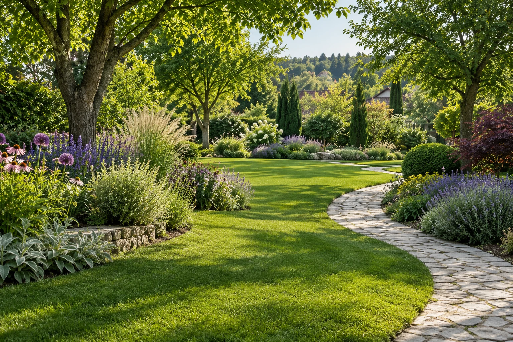

Kertfenntartás
A rendezett kert folyamatos figyelmet igényel. Az elvégzendő munkákat a kert állapotához és az évszakhoz igazítjuk.
- Gyepápolás és fűnyírás
- Sövények és cserjék gondozása
- Ágyások ápolása, gyommentesítés
- Szezonális kerti munkák
Kertépítés és gondos kertfenntartás, hogy a kertje olyan hely legyen, ahol jó időt tölteni.

Hangulatkép · AI-val készült illusztráció
Más feladat egy kert kialakítása és más a rendszeres ápolása. Válassza azt, amiben segítségre van szüksége.
A rendezett kert folyamatos figyelmet igényel. Az elvégzendő munkákat a kert állapotához és az évszakhoz igazítjuk.
Új kert kialakítása vagy a meglévő megújítása. A kiindulópont az, hogyan szeretné használni a kertjét.
A kert adottságaihoz és a növények vízigényéhez igazított öntözőrendszer kialakítása a kényelmes, egyenletes vízellátásért.
Mondja el, mit szeretne megváltoztatni, és milyen segítséget keres. Ezek alapján egyeztethetünk a következő lépésről.
Írja meg, hol található a kert, mekkora, és milyen munkára van szüksége. Néhány fotó is sokat segíthet.
Egyeztetjük a kert adottságait, a kívánt eredményt és a munkák tervezett időpontját.
A megbeszélt feladatok alapján tisztázhatjuk a munka tartalmát és feltételeit.
Írjon nekünk kertfenntartással, kertépítéssel vagy öntözőrendszer telepítésével kapcsolatban. Adja meg a helyszínt, hogy a munkavégzés lehetőségét is egyeztethessük.